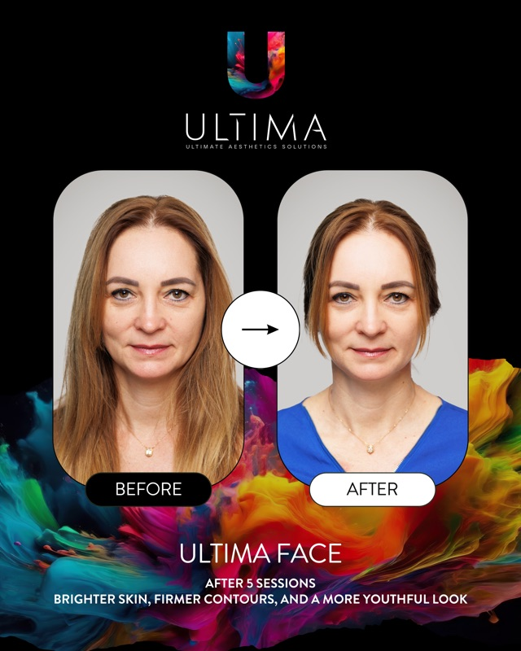
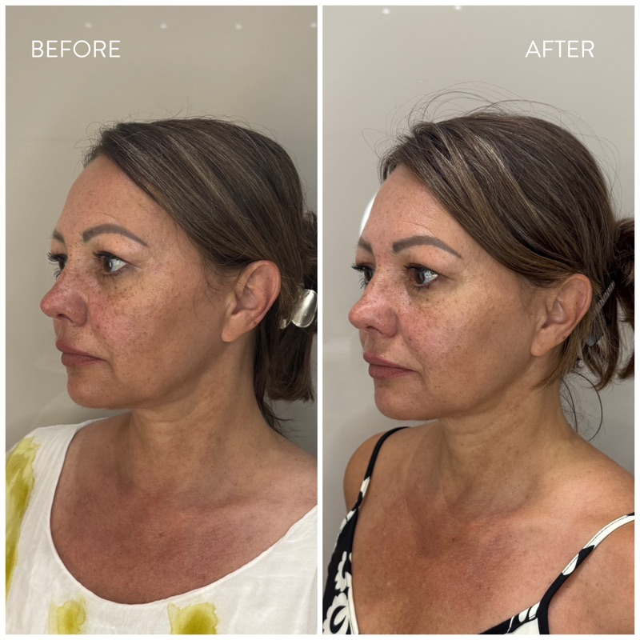
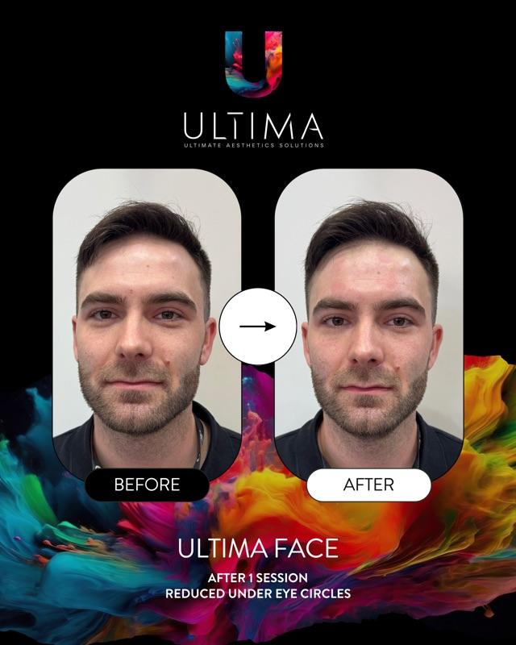

Ahol a tudomány
személyessé válik.
A megközelítés, ami megkülönböztet. Observ diagnosztika, ULTIMA HILEFT™ szövetelőkészítés, LED Mask otthoni regeneráció — személyre szabott Protocol, maximum napi 3 vendéggel.
Miért nem elég egyetlen kezelés?
Az arc öregedése nem egyetlen rétegben történik — hanem három szinten egyszerre. Ezért az izolált megoldások csak részeredményt adnak.
Izomrendszer
Az arcizmok tónusa csökken — a kontúrok meglazulnak, az arc „lefelé csúszik". Ezt sem filler, sem krém nem korrigálja.
Struktúra
A zsírpárnák és volumen változnak — az arcarányok eltolódnak. Célzott korrekció nélkül a harmónia felbomlik.
Bőrminőség
A kollagéntermelés csökken, a sejtek regenerációja lassul. A felszíni kezelések a tüneteket kezelik, nem az okot.
Ezért hoztuk létre a The Ultimate Beauty Protocol-t — egy rendszert, ami mind a három szintet egyszerre kezeli.
Nem kezeléseket kínálunk,
hanem rendszert.
Diagnosztika → Stimuláció → Regeneráció. Három pillér, minden lépés mérhető, minden eredmény dokumentált.
PREPARE
ULTIMA HILEFT™
Neuromuszkuláris stimuláció és mélyszöveti fotobiomoduláció. A szövetelőkészítés, ami nélkül az eredmény nem tartós.
Hogyan hat a kezelés →TREAT
Orvosesztétikai kezelések
A rendszer következő lépése: célzott esztétikai beavatkozások előkészített szöveten. Iratkozzon fel, és elsőként értesítjük az indulásról.
Értesítést kérek →RECOVER
ULTIMA LED Mask
4 hullámhosszú otthoni fotobiomoduláció, napi 10–20 perc. Stabilizálja az eredményt és támogatja a regenerációt.
Hogyan hat a kezelés →Az első látogatása —
4 egyszerű lépés
Megkeresés
Írjon vagy hívjon — megbeszéljük, miben segíthetünk.
Observ diagnosztika
8 klinikai módban feltérképezzük bőre valódi állapotát.
Személyes Protocol terv
Az Observ eredmény alapján összeállítjuk az Ön Protocol útvonalát.
Első kezelés
ULTIMA HILEFT™ — az első lépés a rendszerben. Azonnali hatás, tartós eredmény.
Melyik Protocol az Öné?
3 kérdés — és személyre szabott ajánlatot kap.
A rendszer mögött álló technológia
ULTIMA HILEFT™
Neuromuszkuláris stimuláció + fotobiomoduláció (730nm + 940nm). 15 éves fejlesztés, szabadalmaztatott tripoláris elektródák.
Felfedezés →ULTIMA LED Mask
93g, food-grade szilikon, 4 hullámhossz (415–850nm). 3D floating struktúra, honeycomb kialakítás, beépített szemvédelem.
Felfedezés →Observ 520x
Professzionális bőrdiagnosztikai rendszer 8 klinikai módban. A felszíntől a mély dermiszig térképezi bőre állapotát.
Felfedezés →Ajándék Observ 520x bőrdiagnosztika
minden maszkhoz
Az ULTIMA LED Mask mellé ajándékba adjuk a professzionális Observ 520x bőranalízist — 8 klinikai módban feltérképezzük bőre valódi állapotát.
Azért hoztam létre, mert megérdemeljük
Domik Henrietta több mint 6 évet töltött az orvosesztétika élvonalában szakreferensként és vezető értékesítőként. 8 000 páciens személyes konzultációja tanította meg, mi az, ami tényleg hat — és mi az, ami csak ígéret. Ezt a tudást építette a The Ultimate Beauty Protocol rendszerébe: Observ diagnosztika, ULTIMA HILEFT™ szövetelőkészítés, és ULTIMA LED Mask regeneráció. Maximum napi 3 vendég. Kizárólag személyes Protocol terv.
Vendégeink mondták
Az Observ vizsgálat után döbbentem rá, mennyire más amit a tükörben látok és ami valójában zajlik a bőrömben. A HILEFT kezelés után az első héten éreztem a különbséget.
Féltem az injekcióktól, ezért kerestem természetes megoldást. Az ULTIMA rendszer pontosan azt adta, amit vártam — látható eredmény, fájdalom nélkül.
A LED Mask napi 10 perce lett az esti rutinom része. 3 hónap után az Observ kontroll vizsgálat igazolta — a bőröm textúrája objektíven javult.
Mérhető változás,
dokumentált eredmény
ULTIMA Face kezelések eredményei — valódi páciensek, valódi változás.

Feszesebb kontúrok, ragyogóbb bőr
ULTIMA Face — 5 alkalom után
Teljes arc kezelés
Élesebb jawline, feszesebb nyak
ULTIMA Face — oldalprofil változás
Kontúr lifting
Frissebb tekintet, 1 alkalom
ULTIMA Face — férfi kezelés
Szem alatti karikákULTIMA Face kezelés eredményei. A végeredmény egyénenként eltérő lehet.
Gyakran ismételt kérdések
Mi az a Protocol rendszer?
A Protocol egy háromfázisú esztétikai rendszer: Prepare (ULTIMA HILEFT™ szövetelőkészítés), Treat (célzott beavatkozások) és Recover (LED Mask otthoni regeneráció). Nem egyedi kezeléseket kap, hanem koordinált programot, amely tartós eredményt biztosít.
Mennyibe kerül egy kezelés?
A kezelések árai a típustól és a személyre szabott Protocol tervtől függnek. Az első konzultáció és Observ bőrdiagnosztika ingyenes a Protocol Memberek számára. A Program tagság havonta egy kezelés árából indul — a pontos részletekért kérjen személyes konzultációt.
Ki végzi a kezeléseket?
Minden kezelést ULTIMA certified szakértő végez, aki az összes technológiában képzett. A konzultáción személyesen megismerheti a kezelőjét és megbeszélhetik az elvárásait.
Mennyi idő alatt látok eredményt?
Tesztjeink tapasztalatai alapján az első HILEFT kezelés után sokan tapasztalnak feszességnövekedést. Az Observ 520x mérhető bőrjavulást jellemzően 4 hét után mutat. A teljes Protocol eredmény 8 hét után éri el a maximumát — ezt objektíven dokumentáljuk kontroll vizsgálatokkal.
Fáj a kezelés?
Az ULTIMA HILEFT™ egy kellemesen meleg érzést okoz, amit legtöbb vendégünk relaxálónak ír le. A LED Mask teljesen fájdalommentes — otthon, akár sorozatnézés közben is használhatja. Egyik technológiánk sem invazív.
Jelentkezzen a nyitási időszakra
Cím
1124 Budapest, Gyöngyvirág út 68.
Nyitvatartás
H–P: 9:00–18:00
Szombat: előjegyzés alapján